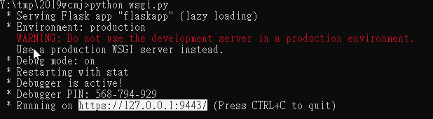
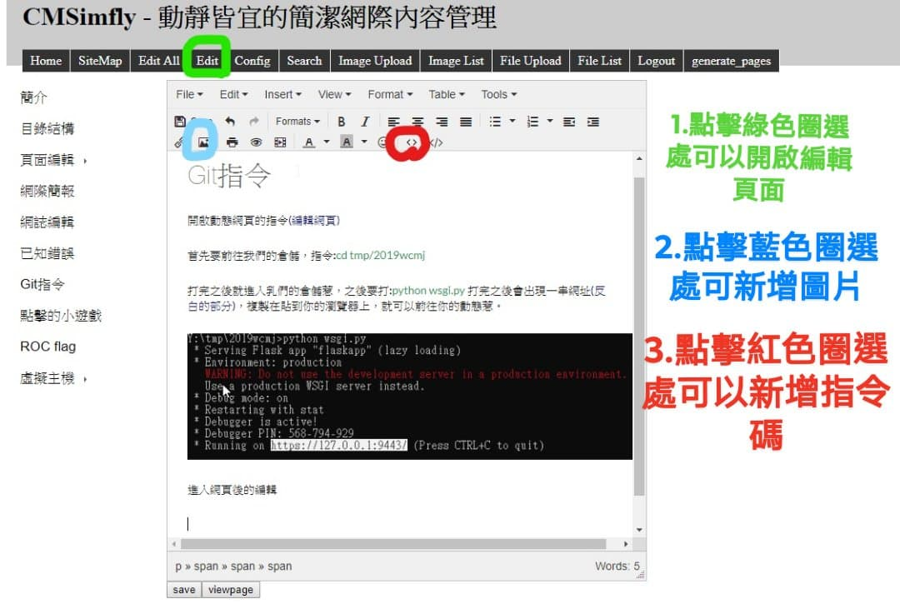
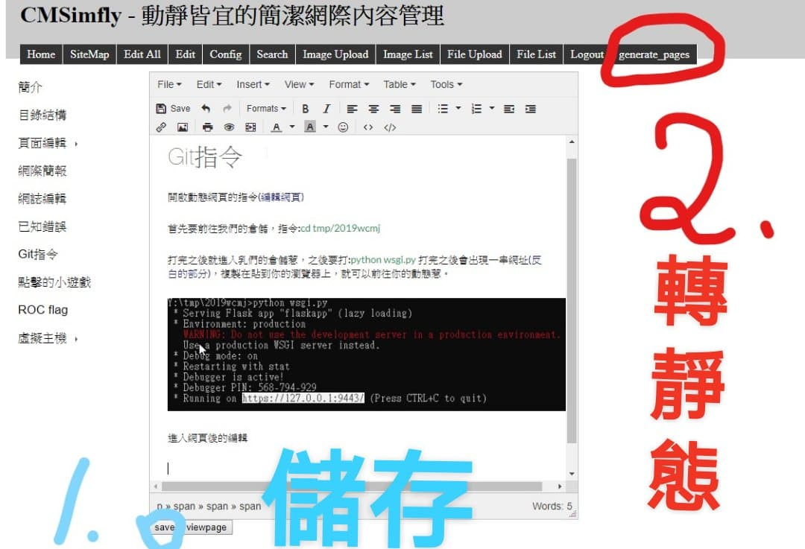

已知錯誤 << Previous Next >> 點擊的小遊戲
已知錯誤 << Previous Next >> 點擊的小遊戲
Git指令
開啟動態網頁的指令(編輯網頁)
首先要前往我們的倉儲，指令:cd tmp/2019wcmj
打完之後就進入你們的倉儲惹，之後要打:python wsgi.py 打完之後會出現一串網址(反白的部分)，複製在貼到你的瀏覽器上，就可以前往你的動態惹。

貼心提醒:記得Log in 密碼admin
進入網頁後的編輯

要打文字直接打就可以惹 ，編輯完成後記得save 如下圖

轉完就去打指令，指令:git add .按Enter會像下面那樣。

之後在打:git commit -m "提交訊息"之後再打git push 就推上去惹。
已知錯誤 << Previous Next >> 點擊的小遊戲